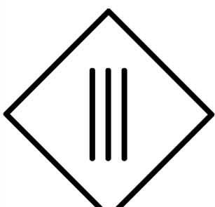

Érintésvédelmi osztályok
|
Minden elektromos készülék rendelkezik egy jelzéssel, mely megállapítja, hogy az adott készülék melyik érintésvédelmi osztályba sorolható. A besorolás nem rangsorolja a készülékeket, hanem az érintésvédelem megvalósításának a módjára utal. 0. Érintésvédelmi Osztály az a gyártmány amelynél a védelem az alapszigetelésen alapul és amelyhez védővezető nem csatlakoztatható és így az alapszigetelés hibája esetén a védelem a környezetre hárul. (Csak alapvédelem van, hibavédelem nincs) I. (Első) Érintésvédelmi Osztály Az ide sorolt elektromos készüléknek az alapvédelmét a burkolat, a hibavédelmét a burkolathoz csatlakoztatott védővezető biztosítja. Ebben az osztályban az aktív részek közvetlen megérintését részben, vagy egészben vezetőképes fémburkolat akadályozza meg. Ha az adott készülék testzárlatos lesz, azaz a burkolat feszültség alá kerül, a hozzá csatlakoztatott védővezetőn keresztül áram indul meg, ami a védelmet megszólaltatja (olvadó biztosító, kismegszakító, fi-relé). Az első érintésvédelmi osztályú készülék csatlakozó vezetéke minimum három érrel rendelkezik: Fázis – nulla és a védővezető. A háztartásokban gyakran előforduló, ebbe az osztályba sorolt eszközök (kivéve a fix bekötésűek) gyárilag védőérintkezővel rendelkező tápcsatlakozóval (dugvillával) vannak szerelve. Ilyen készülék például a hűtőszekrény, mosógép, mosogatógép, és a mikrohullámú sütő vagy az asztali számítógép. A védőérintkezők kialakítása olyan, hogy a készülék csatlakoztatásakor elsőnek a konnektor és dugvilla között jön létre a galvanikus kapcsolat, és csak utána az üzemi vezetők között. De számos első érintésvédelmi osztályba sorolt olyan fogyasztó lelhető fel az otthonokban, ami nem rendelkezik tápcsatlakozóval. Ezek a szerkezetek nem konnektoron keresztül csatlakoznak a védővezetőhöz hanem fix bekötéssel. Ilyen készülékek a villanysütők, villanybojlerek jelentős része, és villanytűzhelyek, fali lámpák (ha I.ÉV.O-ba sorolt) mindegyike. Sajnos a régebbi elektromos hálózatok nem mindegyike rendelkezik kiépített védővezetővel. Ilyen esetekben az I. ÉV osztályú fogyasztó használata komoly veszélyeket hordoz magában. Sok esetben tapasztalni például a régi társas házi és panel lakásokban hogy a fényforrásoknak csak két vezetékkel álltak ki. Ezt fontos figyelembe venni mert I.ÉV osztályba sorolt lámpatest bekötése hibavédelmi szempontból nem lehetséges. II. (Második) Érintésvédelmi Osztály A II: ÉV osztályban lévő készülékek kettős vagy megerősített szigeteléssel kerülnek gyártásra. Ebben az osztályban meg van az az előny, hogy a hibavédelem független a tápláló hálózattól, azaz a berendezés védővezetője nem csatlakozik, és az utólagos csatlakoztatása is tilos. A készülék dugvillája nem rendelkezik védőérintkezővel és a csatlakozó vezeték is csak két érrel rendelkezik (fázis és nulla). Az üzemszerűen feszültség alatt lévő részek úgy vannak elszigetelve, hogy egyszeres meghibásodás esetén nem léphet fel veszélyes érintési feszültség. A második érintésvédelmi osztályba sorolt készülékhez nem csatlakozik védővezető. És az utólagos csatlakoztatása tilos! Ebben az osztályban kétféle megoldás létezik. Az egyik a kettős szigetelés és a másik megerősített szigetelés. A két megoldás egyenértékű egymással. Kettős szigetelés esetében az alapvédelmet és a hibavédelmet két szigetelő réteg biztosítja. Az alapvédelmet az alapszigetelés és a hibavédelmet egy kiegészítő szigetelés. Tehát összesen két szigetelő réteg választja el az elektromos eszköz használóját az aktív részektől. A megerősített szigetelés elektromos és szigetelő tulajdonságai megegyeznek kettős szigetelésével, azaz önmagában ugyan azt a szintű védelmet szolgáltatja. III. (Harmadik) Érintésvédelmi Osztály  A III. Érintésvédelmi Osztályba tartozó készülékek esetében törpefeszültség (ELV) biztosítja az alapvédelmet. Ezt az jeleni, hogy a feszültség szint annyira alacsony, hogy az aktív részek közvetlen megérintése normál körülmények között nem jár az áramütés veszélyével. Ezeknek a szerkezeteknek az esetében nincs szükség hibavédelmi intézkedésre, nincsenek hibavédelemmel ellátva. A III. Év. Osztályba sorolt készülékek további három osztályra tagolódnak feszültségszint szerint III. érintésvédelmi osztály A: Váltakozó feszültség esetén 50V, egyenfeszültség esetén 120V maximálisan. III. érintésvédelmi osztály B: Váltakozó feszültség esetén 25V, egyenfeszültség esetén 60V maximálisan. III. érintésvédelmi osztály C: Váltakozó feszültség esetén 12V, egyenfeszültség esetén 30V maximálisan. Az olyan gyermekjátékok esetén, amelyeket a gyermek felügyelet nélkül
használhat, érintésvédelmi módként a legfeljebb 25 V névleges értékű érintésvédelmi
törpefeszültséget kell alkalmazni. |